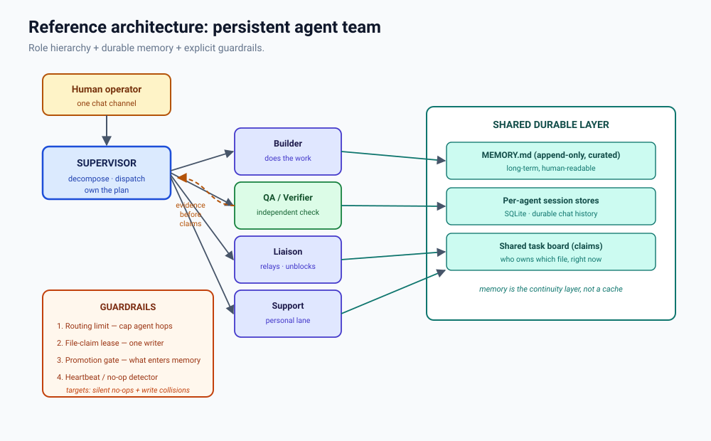

Case study · Multi-agent AI
The Team That Forgot
A live team of AI agents went to sleep on schedule for a week. Every night, the logs said success. Every morning, nothing had been remembered. The fix came from neuroscience.
There is a particular kind of failure that software is very good at hiding. Not a crash. Not an error. A system that runs quietly, reports healthy, and simply does nothing — for a week.
This is the story of one of those weeks. It happened to a small team of AI agents: a manager, a few specialists, each with its own workspace, its own diary, and its own nightly routine. They were built to be persistent — to remember across days rather than start blank every time. And for seven nights in a row, they went to sleep, did their consolidation, and remembered nothing at all.
Nobody noticed, because nothing looked wrong. That is the point of the story. But here is the twist that makes it worth telling: the best description of what went wrong — and the shape of the fix — comes straight out of memory science.
1. A diary for a machine
Most AI systems you interact with are amnesiac. You ask a question, you get an answer, and the system forgets you entirely. Close the window and it is gone. Engineers call this statelessness a feature; it is what makes such systems cheap, predictable, and replayable.
But people don't want an assistant that forgets their kid's birthday. So a second kind of system has emerged: one where each agent has its own workspace — text files that persist — and a memory that survives the end of a conversation. The agent you talked to yesterday is the same agent today, because its notes are still on disk.
Our subject was a deployment of several such agents working as a team. Each agent keeps a short record of things it has noticed, and once a night a consolidation routine runs. The routine has two jobs: rank the day's candidates, and promote the durable ones into a curated long-term file. The rest is dropped.
The pipeline that does this has a name. It is called dreaming.
2. The nightly ritual
The naming is not decoration — it is a deliberate echo of biology, and it is where our story starts to sound familiar to anyone who has studied the brain.
In humans, memory consolidation is the process that stabilises a day's experiences into durable long-term memory. It happens substantially during sleep, in stages — including slow-wave ("deep") sleep and REM — where recent, fragile traces are gradually replayed and rewritten into more permanent storage.[N1] Sleep is not the absence of activity. It is when the filing happens.
Our pipeline mirrors that architecture almost exactly. Candidates first land in a short-term area — the equivalent of short-term memory. Then a gate stands between short-term and long-term, deciding what is durable enough to keep. Sounding familiar yet?
The gate checks three things before it will promote a memory:
- a minimum weighted score (how strongly this item stood out),
- a minimum recall count (how many times it was retrieved), and
- a minimum number of distinct queries it answered.
All three had to pass. All three had been set to values chosen for a large, busy system: a score of 0.75, three recalls, three distinct queries. Hold onto those numbers. They are the whole story.
3. The week everything worked
For seven nights, every agent's log said the same thing:
Ranked 0 candidate(s) for durable promotion.
Promoted 0 candidate(s) into MEMORY.md.Read that again. Not "failed." Not "error." Zero. Calmly, nightly, in the same confident tone a healthy system would use.

DREAMS.md) keeps writing, so the system looks alive from the outside. As far as the software was concerned, nothing had gone wrong.And why would it think otherwise? From the pipeline's perspective, it had done its job perfectly. It looked at the candidates, applied its rules, and correctly concluded that none qualified. There is no error to throw when your standard is simply too high.
4. Three thresholds, never chosen
Here is the detail that still makes me wince. Those three thresholds were never actually set by anyone. The configuration field was blank, so the software quietly fell back on its built-in defaults.
The defaults weren't broken, either. They were tuned for a different scale — for a system busy enough that a genuinely important fact would resurface three separate times, across three separate queries, before anyone expected it to stick.
Our team was never that busy. It was small and private. And so the signal never accumulated:
- 192 candidates staged on one agent.
- Recall distribution: 189 at zero retrievals, two at one, and exactly one at two.
- The single highest score anywhere: 0.737 — against a gate of 0.75.
Every candidate failed at least one gate. One candidate cleared the recall bar and still lost on score, by 0.013. Thirteen thousandths. That is the entire distance between a working memory system and a week of silence.

A memory gets stronger through repeated retrieval — a process called reconsolidation, where recalling something briefly destabilises it and re-writes it a little more permanently.[N2] That is exactly the rule this gate was trying to implement: recall often → keep forever. The mechanism was right. The threshold assumed a brain that was far busier than this one.
5. The bug that only a team can have
Why didn't anyone catch it? Because of a split in how these systems fail — and it is the deepest idea in the whole paper.
A pipeline that produces nothing throws. A team that produces nothing reports success.
A traditional program that ends up with nothing to show for itself crashes. It stops. It tells you. But a persistent team doesn't have that reflex — because from the team's own point of view, it did exactly what it was asked. The rule ran. The gate applied. The answer happened to be "nothing." And "nothing" is not an error.
This failure mode is created by the very thing that makes the team valuable. Because memory persists, there is a gate to get stuck on, a stale default to inherit, and a week-long silence nobody notices. A pipeline cannot have this bug: its memory dies at the end of every run, so it has no gate, no default, and no quiet week.

6. What the industry already built
We are not the first people to assemble AI agents into something resembling a company. Several well-known systems do exactly that — and it is worth being precise about what they are, because the distinction matters.
- MetaGPT encodes a software company's procedures into a role pipeline — product manager, architect, engineer, QA — and insists on structured documents rather than loose chat.[1] Its finding is one to remember: discipline and clean handoffs matter as much as raw model power.
- ChatDev models a virtual company with named officers and a "chat chain" of small, paired tasks.[2] It can run a whole development lifecycle in minutes for about a dollar.
- CrewAI, LangGraph, and AutoGen provide the plumbing: a manager that delegates, a supervisor that routes, a speaker-selection rule that decides who talks next.[3][4][5]
All of these are impressive. All of them share one property: they are ephemeral. The company forms for a single project, finishes, and ceases to exist. Their memory dies with the run — by design. Which means that, helpful as they are, none of them demonstrates the failure we just described. They cannot. They forget by design.
7. The gap
So the field splits cleanly, and the split is easy to miss because the vocabulary is shared:
- Pipelines give you roles, handoffs, and supervisors — but no persistence. The team dissolves at the end of the run.
- Agent runtimes give you persistence, identity, and channels — but no published template for how to arrange a hierarchy on top of them.
No published template, as far as we could find, describes a persistent, memory-carrying, chat-native team with a role hierarchy — and guardrails for the failure modes that persistence introduces. That combination is the gap. It is not a crowded space; it is an under-documented one.
8. A better memory: loose in, bounded out
The old design was strict in, permanent out: a high bar to enter, and once in, you stay forever. That is precisely the shape that failed — the bar was set for a volume this deployment never reached.
The redesign flips it. Loose in, size-bounded out. Getting in is cheap. What earns a memory a higher tier is not a strict entrance exam but recurrence — being recalled again. And what decides what gets dropped is not age but size: when a tier fills up, something has to give.
Loose promotion. Quality by eviction. Recall is the only vote that counts.

The thresholds are no longer magic numbers. They are percentiles of the system's own history — which means they adapt to whatever scale the deployment actually turns out to be, and they are deliberately loose. Loose is safe here for one reason only: eviction does the quality control. A loose gate without eviction is just a bigger pile.
Psychologists have known since Ebbinghaus that unused memories decay along a forgetting curve — steep at first, then flattening.[N3] Classically that curve is driven by elapsed time. Our redesign ties it to use instead: a frequently-recalled old memory outlives a rarely-recalled new one, and age never triggers eviction on its own. That is closer to synaptic pruning in the brain, where unused connections are actively removed while well-used ones are reinforced[N4] — forgetting not as a failure, but as maintenance.

9. Making silence loud
The deepest lesson wasn't that the threshold was wrong. It was that being wrong was invisible. So the fix has two parts, and the second is the important one:
- A no-op detector. Promoting zero memories while holding twenty or more candidates is not a quiet week. Under a deliberately loose gate, it is an anomaly, and it says so.
- Assert on artifacts. A healthy cycle must produce a visible change somewhere. No change is a failed run, not a silent success.
That second rule generalises far past memory: assert that the artifacts a healthy run must produce actually exist — don't merely check that no error was raised. A missing output is a far stronger signal than a wrong one. This bug was found in the end not by monitoring, but by someone asking why a file that should have existed didn't.
10. What the team looks like
The architecture that emerged is deliberately boring, and every part of it exists to prevent a specific failure:

- A supervisor that owns the plan and dispatches, but does no building.
- Specialists who do the work in their lane.
- An independent verifier — and it must be a genuinely different agent, or it isn't verification.
- A shared ledger that every agent reads at the start of a session: decisions with provenance, who owns what, standing conventions. A ledger, not a scratchpad.
And four guardrails: a hard cap on how many times agents may hand work back and forth; a file-claim lease so two agents can never write the same file at once; the promotion gate itself; and the no-op detector. We learned the file-claim rule the hard way — two writers on one file is a data-loss bug that pipelines simply cannot have, and teams must prevent by construction.
11. A word on guardrails
There is a tempting belief that you can make an agent behave safely by writing careful instructions to it. Our experience is that this is mostly comfort, not control. Some instructions are load-bearing — safety and oversight outrank finishing the task; obey a stop instantly; never quietly work around a denial. Those should be sharp and few.
But the real limits live outside the words: in what tools an agent may use, what approvals it needs, what the sandbox allows, what budgets cap, and what the audit log records. And one boundary matters above all others — no agent may edit its own permissions, prompt, or safety configuration. If it can rewrite its own rules, every rule you wrote is decorative.
12. What we still don't know
- Adaptive gates at small scale. We have a design (Section 8) and one deployment. The small-window fallback — what to do when there isn't enough data for a percentile to mean anything — is still open.
- Reproducibility. Pipelines are replayable. Teams are not. There is no established way to reproduce a persistent team's behaviour after the fact.
- Cost attribution. When agents coordinate by chatting, the cost is diffuse across sessions. Per-project accounting is unsolved.
- Verification independence. How do you guarantee a verifier isn't just a second copy of the builder's assumptions?
- Garbage collection for identity. Pipelines end; teams accumulate. Nobody has a practice for pruning a long-lived team.
This is one deployment, measured first-hand — suggestive, not statistically meaningful. We did not run competing frameworks ourselves; where we describe them, we mean as documented. And Section 7 of the underlying paper is explicitly opinion, offered to argue with. Treat all of it that way.
References
Neuroscience
- Sleep and memory consolidation. Diekelmann, S. & Born, J. "The memory function of sleep." Nature Reviews Neuroscience 11, 114–126 (2010). Overview of how sleep stages support the stabilisation of memory.
- Reconsolidation. Nader, K., Schafe, G. E. & LeDoux, J. E. "Fear memories require protein synthesis in the amygdala for reconsolidation after retrieval." Nature 406, 722–726 (2000). Foundational demonstration that retrieval can destabilise and re-stabilise a memory.
- Forgetting curve. Ebbinghaus, H. Über das Gedächtnis (1885). The original empirical account of retention decay over time.
- Synaptic pruning. Lichtman, J. W. & Colman, H. "Synapse elimination and indelible memory." Neuron 25, 269–278 (2000); and reviews of experience-dependent pruning in development and learning.
AI systems and prior art
- MetaGPT. Hong, S. et al. MetaGPT: Meta Programming for a Multi-Agent Collaborative Framework. arXiv:2308.00352. arxiv.org/abs/2308.00352
- ChatDev. Qian, C. et al. ChatDev: Communicative Agents for Software Development. ACL 2024, arXiv:2307.07924. arxiv.org/abs/2307.07924
- CrewAI. Hierarchical process and custom manager agent. docs.crewai.com
- LangGraph. Supervisor and hierarchical agent-team templates. github.com/langchain-ai/langgraph
- AutoGen. Microsoft. github.com/microsoft/autogen
- OpenClaw. Multi-agent routing, parallelism, dreaming, and the memory plugin. github.com/openclaw/openclaw · docs:
concepts/multi-agent.md,concepts/dreaming.md
Role framing (used carefully)
- Kong et al. Better Zero-Shot Reasoning with Role-Play Prompting. NAACL 2024. aclanthology.org/2024.naacl-long.228/
- Zheng et al. When "A Helpful Assistant" Is Not Really Helpful. Findings of EMNLP 2024. aclanthology.org/2024.findings-emnlp.888/
- Kim et al. Persona is a Double-edged Sword. arXiv:2408.08631. arxiv.org/abs/2408.08631